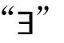
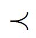
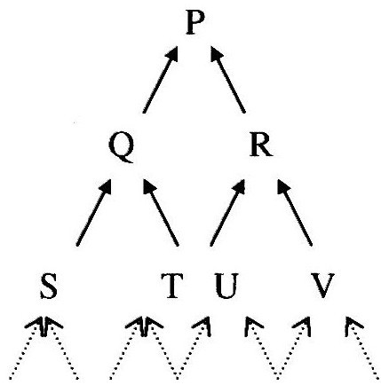

吉迪恩·罗森
如果明了真相，就明白不存在数这种东西。这不是说在15和20之间不存在至少两个素数。
保罗·贝纳塞拉夫，“数不可能是什么”（Benacerraf，1965）
问题
保罗·贝纳塞拉夫的著名论文的最后这句话是一桩公案：看似废话，但点出了——或者说似乎点出了——一个深刻的真理。在15和20之间存在[62]两个素数，这是一条基本的算术定理。因此任何承认算术基本定理的人都必然同意在15和20之间存在两个素数，因此至少存在两个数，因此存在多个数。然而数是真实存在的想法——真实世界包含数学对象就像包含枪和兔子一样自然的想法——听起来会让人觉得荒谬或困惑。因此我们发现哲学家总在使劲地阐明以下立场：
显而易见，这种言论像其立场一样相当令人费解。假设灭虫专家告诉你，你家阁楼上有松鼠，然后他又继续补充道，当然，在严格的和哲学的意义上说，不存在松鼠。或者假设某个天体物理学家报告说，在某个星系的中心有三个黑洞，然后又说：“顺便提一句，黑洞不是真的，它们不是具体的东西。”如果你像我一样，你会发现这些言论不可理解。然而在数学哲学上有一种普遍的意识：这种阐述方式，虽然可能不是像人们乐于接受的那样明晰，必须在某种意义上得到理解。
本文试图阐明什么是有条件的数学实在论。这种实在论之所以是实在论的一种形式，是因为它坚持认为数学对象是存在的。而之所以称之为有条件的实在论，是因为它认为这些数学对象毕竟在形而上学看来是属于“第二等”的。困难在于这种条件指的是什么。
我一度曾认为，以这样一种方式来产生一种值得讨论的有条件的实在论是无法做到的（Rosen and Burgess，2005；Rosen，2006），现在我认为这种悲观情绪是不成熟的表现。本文的目的是对有条件的实在论者可能心中所想的那些东西给出一种解释。它是这样一种解释，按照这种解释，从某种形而上学的观点看，数学对象是与某种范式——日常经验的对象，也许或是物理科学的对象——作不恰当的比较。我并不赞同下面将要讨论的有条件实在论的观点，但我相信这种观点值得我们注意，其目的只是要把这种观点摆上桌面。
关于数学对象的简约实在论的事例
在我们开始之前，综述一下实在论本身的事例（Burgess，1983；Burgess and Rosen，1997；Rosen and Burgess，2005）也许有助于我们对后文的理解。
所谓有关数学对象的简约实在论，我指的是断言数学对象存在的实在论。这里的“数学对象”可谓包罗万象，包括数、函数、集合、群、空间、模型、向量、范畴、方程组、形式语言和数学涉及的其他各方面对象。我们说数学对象存在，这句话的意思是至少存在一个这种类型的对象，或者说，这样的东西是存在的。
在这种语境下我一定要用“exist（存在）”这个词吗？我不认为是这样。与“存在”有关的习语——谓词“exists”，以及像“there are ……”，“there exist ……”，“at least one ……”等定量表达式——都是数学的日常语言的一部分。这些习语在语言上都是等价的，它们的含义很清楚。这就是为什么在标准的数学形式化表达中它们都可以用一个符号

来表示的原因。如果你正在阅读本文，说明你已经明白这种语言，我建议你就按照这种理解来把握全文。因此我想补充一点，当我说简约实在论指的是“数学对象存在”这样一种观点时，我是在通常的数学意义——即一个高中学生或一位职业数学家在谈到某个方程有两个解时心里所想的那种意义上来使用“exist”这个词的。它不是一个定义，但它足以满足本文的需要。[64]按照这样的理解，简约实在论就不是一种深奥的形而上学的断言，而是一种数学上的断言——一个有关数学最基本部分的平凡结果。正如前文指出的，它是一条表明在15和20之间有两个素数的算术定理。这条定理要求必须至少存在两个数，因此至少存在两个数学对象。因此任何接受算术基本知识的人除了接受简约实在论别无选择。
我们应当接受算术基本知识吗？我们有什么理由要相信在15和20之间有两个素数？在我看来，初等数学的断言与其他方面的常识性断言——例如断言我们生活在一个真实事物（即使我们没注意到它们，它们仍存在在那里）的世界里，再譬如断言生活在与我们相同的环境里的其他人类也具有有意识的心理活动——有同样的地位。当然，常识容易出错，但是，如果一个哲学家（或科学家或其他人）希望对常识性断言提出疑问，那么他必须给出怀疑的理由。而就算术基本知识而言，这样的理由根本不存在。算术在数学基础上显然是无懈可击的。[65]如果我们将接受或拒绝一个理论的普通的科学标准作为权威，那么每一门成熟的科学都将运用数学视为当然这一事实就足以表明，广义上的科学活动从来没有对算术提出过怀疑。如果说在这一领域还存在任何怀疑的理由，那么这些理由必定出自独特的哲学理由。我不想对哲学家们在这种语境下所发展的论据进行点评，但我会（很简单地）谈谈为什么我觉得它们缺乏说服力。现有的论据分为两类。一些哲学家认为，我们应该拒绝标准数学，因为存在数和数类是件很奇怪的事情。这确实是真的。如果存在26这样的东西，那么它既明显不同于我们日常经验的对象（如桌子等），也有别于物理学所揭示的那些不为常人所熟悉的对象（如夸克等）。那它是什么呢？要想以这个理由来倡导拒绝算术，那么宏大的形而上学体系（有时也被称为物理主义，按照这个学说，一切绝对存在的事物都应像桌子或夸克那样真实）要比像15和20之间存在两个素数这样的算术断言更让人信赖。但是如果问题是在宏大的形而上学体系与算术基本知识之间进行取舍，那么在我看来，很明显，形而上学应当作出让步。
另一类哲学家拒绝基本算术是因为他们认为，如果存在数和其他数学对象，那么我们就没有办法知道关于它们的任何东西。这种断言通常得到关于知识的一般哲学理论的支持。根据这一理论，获取知识需要通过知识获取者与其研究对象之间的某种形式的互动才能实现（Benacerraf，1973）。这些理论最初被发展出来用于解释经验知识，从这个目的来看，它们也许是有用的。但如果哲学家坚持认为它们对于完全一般性的知识仍能够成立，那么他就将面临一种严峻的困难境地。这些约束性理论通常会要求，确定数学观点的通常方式——计算、证明、非形式数学论证——不可能成为知识来源（因为它们不涉及研究者与数之间的因果互动），因此，那些以通常方式相信235+657=892的人其实并不真正理解为什么235+657=892。但这样问题就来了：为什么这个例子不能看作是对这些哲学家的理论的一个简单的反例？在其他领域，当一种哲学理论与外界公认的事实不相容时，通常的反应是重新考虑理论或重新限定其适用范围。知识哲学理论必须能够容纳数学知识这一显然的事实。如果理论与这一事实有冲突，那只能说这种理论没用到家了。
这只是对复杂的辩证逻辑的一种粗略的勾勒，但其中的主要策略应该是明确的。不论是以数学的相关准则来衡量，还是以科学和常识的标准来衡量，数学中的核心断言都是无可非议的。因此，对这些断言的任何哲学挑战都只是某种特定的怀疑论性质的挑战，这种挑战依赖于明确地将哲学原理应用于其本身并非纯哲学问题的问题上。这种怀疑论挑战出了名的软弱。当思辨哲学与公认的科学知识或常识有矛盾时，正常的反应——我相信这也是合理的反应——是怀疑哲学家是不是错了。这不是一项颠扑不破的原则，但却是一条很好的经验法则。如果在目前的这种语境下我们遵循这一法则，那么我们别无选择，只能得出结论：因为在15和20之间存在两个素数，因此，数学对象存在。
有条件的实在论：一个例子
这样看，简约实在论不只是一种哲学上的断言，而是公认的数学的一个（微不足道的）部分。但对许多哲学家来说，这种观点让人形成一种令人反感的图像——数学像是一门动物学，一门以描述特定类别事物的奇妙行为为目的的科学。二者的主要区别在于，在数学里，我们感兴趣的对象是数和那些完全不可见事物的无限性。[66]正是这种思想，包括其他一些思想，使得哲学家沿着我们称之为有条件实在论的方向探索，即形成数不是在狮子和老虎这类东西的意义上为真的东西。我们的任务是要给这种暗思想一种意义。
我们从一些似乎鼓励这种空话的观点下的例子开始。这些例子全是各种版本的算术还原论。一般来说，还原论在这方面的论点是站得住脚的：某种程度上，算术事实就是最基本的事实，没有其他更基本的事实作为其基础。现在，与此有关的一些还原论者的建议已不具有有趣的形而上的意义。如果理论家用纯集合的概念来标识具体的数——譬如称0是空集，接下来，数n是一个集合，它有唯一一个元素是n——那么算术的每一个事实都可以还原为集合论的事实。然而，这种还原论本身没有要抨击数的实在性的倾向。毕竟，它与下述观点是一致的：集合的概念与任何类似于实际事物的可能的东西一样坚挺，由于这种观点将数等同于集合，因此它与有关数的无条件的、十分牢固的实在论是一致的。
当我们考虑那些旨在将数学某些部分的真理还原为那种能用某种更基本的词汇（即那种不会将数学对象等同于更基本的理论所认同的对象的词汇）来表述的真理的建议时，我们便得到一种更有趣的还原论形式。作为证明，我们来考虑算术哲学里的形式主义。形式主义哲学的核心思想是，算术最终只与事物的语言域相联系。相反，只要算术有适当的题材，它便是算术语言本身及其句式之间的某种形式上的关系。[67]这里给出一个这种观点的简单版本。令PA是初等算术的通常形式：一阶皮亚诺算术。[68]设PAω是这一理论的升级版（补足了推理的无限性法则——奥米伽法则（ω—rule），即允许推理从无限序列前提A（0），A（1），…，A（n）…推得普适量化的结论：对于所有的数x, A（x），PAω显然是一个完好的理论。公理是真实的，推理法则维护真理。更重要的是，PAω在下述意义上也是一个完备的理论：在算术语言中，每个句子A具有这样的性质：A或A的否定句总有一个在PAω中是可证明的。[69]这意味着，任何接受标准算术的人都应接受以下的等价陈述：
对于算术语言的任何句子A, A为真当且仅当A在PAω中是可证明的。
就其本身而言，这种等价性是一个没有什么特别的形而上学意义的数学事实。即使是最顽固守旧的柏拉图主义者也会接受它。现在我们来考虑具有形式主义特征的断言：
对于任意真的算术句子A：
A为真，因为A在PAω中是可证明的；或者
使A为真的东西在PAω中是可证明的事实；或者
A为真是基于这样一个事实：A在PAω中是可证明的；
A为真包含在A在PAω中是可证明的这一事实中。
这里的楷体语词不是数学的正式词汇的一部分。数学使我们确信，有关自然数的断言等价于某个形式体系下某个句子的形式可证明性的断言。但形式主义的独特的断言是：算术事实是以某种方式建立在这些证明理论的事实基础之上的，因此相应来说，证明理论的事实更为基本。从数学的角度来看，这种断言很不专业。它是一种关于算术形而上学的独特的哲学断言。
我们注意到，即使还原论性质的形式主义者将语言学上的某些成分（句子和形式系统）看作比数更基本，他也不能否认数的存在。由于算术的存在定理（例如，在15和20之间存在两个素数）在PAω中都是可证明的，因此形式主义者必须承认这些定理都是真的。但正如我们已看到的，如果这个特定的定理是真的，那么就存在两个素数。因此形式主义者必须接受（就像人们喜欢强调的那样）存在数，数存在。就我们的目的而言最重要的是他接下去要说的东西，即全盘接受数的存在等于某些句子能够以某种形式计算方式从某些其他句子导出。正是在这一点上，他开始变得不像有关数的十分牢固的实在论者。
对此人们试图解释如下。如果数是第一位的，那么我们关于数的断言就可能是真的，这些断言为真的部分原因是数有它自己的存在方式。看看动物学就知道这是怎么回事。企鹅是实实在在的东西，关于它们的真实断言之所以为真，至少部分原因在鸟本身。相比之下，在如形式主义所理解的算术中，关于数的陈述之所以为真（当此时），是因为这种陈述能够以某种形式规则从某些公理中推导出来。数本身在奠定算术真理的过程中没起任何作用。事实上，人们通常很自然地假设这种因果关系是倒过来的。如果我们要求形式主义者告诉我们为什么关于素数无穷的欧几里得定理是真的，他会说，这之所以是真的，是因为它是一条PAω定理。如果我们接着问他为什么存在无穷多个素数——也就是说，如果我们问的是有关数本身的问题，而不是关于某个句子是否为真的问题——他可能会说：存在无穷多个素数，是因为“存在无穷多个素数”[70]这句话是真的。按照这种解释（“有点超出上面所表述的形式主义的明确观点）[71]，不仅数学对象在使我们的数学理论为真的过程中没有发挥作用，而且对象本身的存在也仅仅是因为我们出于其他理由给出的关于它们的断言为真。只要听到这一点，便明显可知形式主义就相当于一种关于数的有条件的实在论。
另一个例子：模态结构
作为另一个例子，我们来考虑关于算术基础的一种结构主义版本。结构主义始于一种重要的观点：只要我们证明了关于自然数的一项定理，我们事实上就已证明了关于同构于数的对象的任一集合的更一般的定理。自然数的标准顺序为
0，1，2，……
我们用例子来给出一种独特的模式：一个离散的没有最后元素的线性序，其中每一项只有有限多个前项。如果罗马皇帝的继承能够永远延续下去，则序列
奥古斯丁、提比略、盖尤、……
将是这种模式的另一个实例。我们称像这样的任何有序集为ω序列。一般情况下，有序集是由集合X和这个集合上的关系

组成对（X，）。在上述假设的例子中，各朝代的罗马皇帝之间有时间关系x的统治在y的统治之前，他们共同构成一个ω序列，就如同具有x小于y关系的自然数构成一个ω序列一样。为了说明与算术有关的相关事实，我们需要一种更普遍的观点。众所周知，如果给定合适的逻辑背景，那么每一项能够用现代数论的精准专业语言陈述的算术断言都可以用仅有原始符号N（表示自然数）和﹤（标准的“小于”关系符号）的精练语言来表示。如果A是一个普通的算术语句（例如，在15和20之间有两个素数），则我们可以将它翻译成这种精练的语言A[N，﹤]。
相关的定理如下：
这里A[X，]是在A[N，﹤]中用变量X和集合上的关系替换专门的算术词汇N和﹤的结果。因此，如果A[N，﹤]是用算术语言给出的一个描述自然数展现某种算术功能的句子，而等价关系的右边是说，任何ω序列——即使它的元素是罗马皇帝——展现出相应的纯结构特征。因此，该定理要求：每一个关于数的算术断言等价于一个关于ω序列的完全一般性的断言。
现在，在这一点上，我们必须注意这个小定理的假设。ω序列是一个无限集合，因此，如果不存在无限集合，就不存在ω序列。但如果不存在ω序列，那么等价关系右边的每一个实例就是平凡真实的。这意味着，这个等价关系仅当实际存在无限集合时才成立，人们可能希望避免做这种假设。要做到这一点的方法之一是考虑一个有点不同的等价关系。即使事实上不存在无限集合，但原本是有可能存在的。罗马帝国没有永远延续下去，但原本是可以延续的。考虑到这一点，我们可以考虑以下等价关系：
A[N，﹤]当且仅当作为必然性问题，对于任何ω序列（X，]，A[X，]。
即使真实世界里不存在无限集合，但这样的断言——任何可能的ω序列都具有某种结构特征A[X，]——则是不平凡的（在假设有可能存在ω序列的基础上）。这一定理肯定了这种模态断言等价于我们开始时说的普通的数学断言。（一个模式断言是指描述什么是可能的或是必然的断言。）
到现在为止，这仅仅是一个没有争议的（如果有些陌生的话）数学。任何接受标准算术的人都应该接受这种等价性。结构主义者特有的哲学断言是，算术真理可还原到或者说是基于关于所有可能的ω序列的一般性断言。[72]回到我们的“在15和20之间存在两个素数”断言的例子。结构主义者接受这个断言，是因为他认为普通算术满足其上述立场。这意味着他（如同形式主义一样）不能否认数的存在。他的独特断言是：关于存在数的这个事实是基于如下事实：如果存在任何一种ω序列，就一定存在某种复杂的结构性质——粗略地说，对于此例就是在第16个和第21个元素之间存在两个“素元素”。[73]这里最关键的一点是：从表面上看，这后一个事实不是关于一种具体类型对象的事实。具体来说，它既不是关于数的事实，也不是关于罗马皇帝的事实。事实上，它让人感觉到这个事实不关乎任何东西。毕竟，形如“如果存在某种无穷集合，那么它将显现这样和这种性质”这样的条件模态断言不确认真实世界中任何事物的存在性。根据结构主义学说，算术真理正是由这种模态事实赋予的。这就不难明白为什么那些接受这一观点的人可能会不由自主地说有一种数不是真实的存在的感觉。关于企鹅的真理是由鸟类及其行为等事实而变得为真的。相反，有关数的真理并不是真正由数赋予的，而是由数本身并不显现的一般性条件的事实赋予的。
制定建议的框架
例子可以倍增，但其模式应当是明确的。对于给定种类的数学对象（例如，自然数），当我们凭借更基本的语词所描述的某种真理（问题中的对象不在其中显现）得到关于这些对象的每一条真理时，我们说这类数学对象是可还原的。在我们的例子中，还原性事实——即关于PAω中可证明性的事实，或关于每一种可能的ω序列——并不明确涉及（或量化）数，而借助于这种还原性事实，我们确立了有关数的每一个事实。如果这种形式的观点是正确的，那么当在某种意义上说数是完全真实的存在——存在这种东西——时，它们在下述意义上倒可能是“不真实的”：当我们检查最终基于算术真理的事实时，我们发现不存在任何种类的数。这提出了一个口号：真实的东西还原后不会消失。正如普特南指出的（Putnam，1967），拒绝“数学对象图像”的一种方法就是认为数学对象仅在这个意义上是不真实的。
讨论到这里已经将一种神秘性变换成了另一种。我们开始时想搞清楚的是，数和其他数学对象是不是真实的存在物。这个最初的设想是想用其他概念来解释这个概念——一种真理可以还原为另一种真理的思想。然而这个概念非常有问题。当然，在我们（譬如）说将有关意识的精神生活的真理还原为有关大脑和身体的生理过程的真理时，这句话到底是什么意思，可谓见仁见智，很混乱。还原的概念有许多，因此解释我们的建议有许多种方法。与调查选项的方法不同，我喜欢简单地勾画一个概念，我认为这种方法特别适合于我们的目的。
按我的理解，还原实质上是各种事实（而不是各种句子或陈述）之间的一种关系，尤其是那些句子旨在描述的诸项事实或状态之间的一种关系。因此，还原是一种形而上的关系，而不是一种语义关系。说一种事实还原到另一种事实不是达成一个关于语词意义的断言，而是达成对事实本身的断言，这些事实的确立通常完全独立于我们的描述和思考它们的能力。
就目前而言，我们应将事实看成是由对象、性质、关系和其他各种属性所建立起来的复杂实体，这里说的属性与用词构建的句子有大致相同的意义。例如，2+3=5就是一个复杂的事实，它可以表示为：
[=（+（2，3），5）]
在这里，数字2和3以及等号和加法运算都是这个事实的组分，正如“2”和“3”是句子“2+3=5”的组分一样。[74]（在下文中，方括号中的句子命名为一个事实，其结构对应于封闭句子的结构。）
我的主要的实质性假设是：事实由基础的基本关系确立。这种关系没有标准的英语单词可加以描述，也没有公认的哲学术语来指称它。但当我们说一个事实依据另一个事实而确立，或者说一个事实使得另一个事实被确立时，我们有很多熟悉的语词可用来点出其正确指向。举一些例子可能会有帮助：
析取性（disjunctive）事实基于其真实的析取支。我现在要么在新泽西，要么在剑桥，这便是一个析取性事实。这个事实依据“我在新泽西州”这一事实（析取支）而确立（当它发生时）。如果我已经在剑桥，那么尽管原因不同，但我们会得到相同的事实。
存在性（existential）事实凭借其具体事例而确立。有人打翻了牛奶，这是一个事实。譬如，当弗雷德打翻牛奶时，我们便得到了“有人打翻了牛奶”这个事实。如果是别人打翻了牛奶，那么尽管原因不同，但我们会得到相同的事实。
有关具有可确定（determinable）特征的事物的事实以更多的确定性事实为基础。“某个球是红色的”这个事实依据（譬如说）深红色的球而得到确立。“粒子的质量在10～20 MeV之间”这一事实依据粒子的质量为17.656 MeV这一事实而得到确立。
涉及可定义的（definable）属性和关系的事实依据其“定义的扩展”而确立。根据定义，所谓正方形是指一个等边的矩形。鉴于此，如果ABCD是一个正方形，那么“它是正方形”这一事实就依据它既等边又是矩形这个事实。后者便是使一个正方形得以确立的东西。
伴随性（supervenient）事实典型地依据它们所伴随的事实，尽管我们不能有系统地说明依赖的模式。“2008年美国对中国的贸易赤字大约为1170亿美元”这个事实伴随着大量单个经济交易活动的事实，也许最终还可以说伴随着有关（构成从事买卖的人的）夸克和电子等一系列更广泛的事实。宏观经济的事实正是依据这些较低一级的事实而确立，尽管我们不可能具体找出，哪怕是原则上找出，是哪些微观事实使得这一宏观事实得以确立。
这些实例给出了支撑关系的两个重要特征。首先，这种关系是必然性的一种形式。支撑一个给定事实的事实需要其所支撑的事实具有绝对必然性。这一点将支撑关系与某种形式的因果关系或推理确定的关系区分开来。毫无疑问，从某种意义上说，效果取决于其原因：使效果得以显现等的原因。但正如休谟指出的，总是存在这种可能：原因发生而不产生效果。正如上述例子所标明的那样，我们感兴趣的支撑关系涉及一种更为内在的依赖形式。
其次，支撑关系是一种解释性关系。引用一个支撑给定事实的事实是为了给出有关为什么能得到这个（给定）事实的信息。因此，提出支撑关系是一种客观关系的假设，正如我做的这样，就是假设存在有关解释性命令的客观事实（这不是说给出解释的实践始终只是一件报告这些客观事实的事情）。
这些论述并不等于给出支撑关系的定义。我自己的观点是，这种关系太过基本以至于我们给不出定义。对它的理解更多的是通过非正式的解释，但我希望这里的论述已足以满足我们目前的需要。[75]
建议
在数学哲学上还原论者的建议是这样一个断言：某一数学分支的每一项数学事实——例如算术的每一条真理，或集合论的每一条真理——最终都基于不同种类的事实，例如关于形式的可证明性的事实，或关于如果存在无穷序列对象时所发生情况下的事实。[76]我们已经考虑了两个例子，其中还原论者的这类建议似乎暗示着算术对象并不那么真实或像某些其他事情那么“像回事儿”。在这些建议中，还原关系已经有鲜明的特征：较高层次理论的对象并不包括理论被还原到的更为基本的事实。这暗示了一种用于解释有条件实在论的形而上学论点的自然战略。
让我们这么说：一个事实是基本的，如果它没有进一步的事实作为支撑的话；一个东西是基本的，如果它是基本事实的一个组成部分的话。由此，我们可能用“某些数学对象是基本的东西”这一观点来确认关于数学的十分牢固的实在论。它肯定是铁杆柏拉图主义者的观点。在他们看来，数是独特的、抽象的物质——排列在柏拉图天堂上的不可见的光球。同时它也是那些较温和的柏拉图主义者所持的观点，这些人将算术，也许还包括像策梅罗—弗兰克尔集合论这样的更全面的理论，看作一整套自足的、并非基于更基本事实的真理。这两种数学实在论都反对我们前面讨论的有条件实在论的形式。
更一般地说，用来解释与有条件的实在论相联系的令人费解的空话的建议可陈述如下：
有条件的实在论关于F的观点是F存在，且没有基本事实将F作为其组成部分包含在内。
当哲学家告诉你，数在形而上的意义上不是真实的（即使它们在数学的意义上是存在的），那么他或她的意思可能是指这样一件事：数所代表的每一个事实最终都将凭借一些数不作为其组分的事实的集合而得到确立。
这种观念得到了来自对其他领域“突现的[77]”或“更高层级的”实体的本体论地位反思的支持。譬如以“美元”“欧盟”或“我的硬盘驱动器里的编码信息”为例。一望便知，这些东西是存在的。美元作为真正的国际流通形式是一种存在，在这个意义上，意大利里拉也曾经存在，但现在已不再存在。欧盟是一种存在，在这个意义上，星际联邦不存在，但也许有一天会存在。我的硬盘驱动器里确实编存了一大堆信息，如果我按错键，这些信息就可能会被破坏。然而，有很强的倾向认为，尽管对这些存在的断言是完全正确的，但将美元看成是像桌子或上帝一样的东西，或是像柏拉图主义者眼中的数一样的东西，则是错误的。上述建议使我们能够理解这一趋势。作这样的假设是很自然的：有关美元或欧盟的每一个事实最终都是基于如下一些不同的事实——经济行为者和诺克斯堡的黄金储备局的态度和行动，和欧盟国家间做出的法律安排等事实。当然有一点希望在此说明一下，美元对欧元的比价目前是0.6825欧元。但这一点不是建议所要求的。与还原论的一些早期概念不同，我们这里所理解的还原论不是一种关于用更高级词汇来阐述句子含义，或有关将这样的句子翻译成另一种语言的可能性的观点。它只是这样一种断言：有关货币和其他一些事情的每一个事实最终都是基于关于其他事情的模式极为复杂的事实。当然这种货币还原论未必是真实的。这在经济哲学里是一个实质性问题。上述建议只是说，我们的直观感觉是，从本体论角度看，美元是“派生的”或“第二位的”。我们的这种感觉源自我们的强烈质疑：从上述意义上看，美元不太可能是基本的东西。
如所制定的那样，这个建议要求仅当存在基本事实时才存在真正的东西。人们可能会反对说，我们不能先验地假设这一点。但我们都知道，事物的层级或树状结构可能是无限的，其中P基于Q和R，而Q和R又是基于S, T，U和V，如此循环往复。

作为一个粗略模型，我们可以想象这样一个世界，其中关于原子的事实是建立在夸克和电子的事实基础之上，而夸克和电子的存在又是建立在“超夸克”和“超电子”的事实基础上，如此以至无穷。当然，仅仅存在一些非支撑性的树状分支并不意味着不存在基本的东西，因为基本事实也可能存在于其他地方。只有当每一个事实都基于进一步的事实时，麻烦才会出现。在这种情况下，我们的定义要求不存在基本的东西。
这是否就是我们的建议受人诟病的后果？解读这一点的最佳理由可表述如下。其中每一个树状分支都有其支撑基础的世界可分为两种。在这些世界里，每一个作为某一层面上事实的组成部分的对象，最终都绝对会在我们沿着树状结构不断向下探索（追溯每一事实的根源性事实）的过程中“消失”。在这种情况下，我们的建议要求，很多事情虽然在通常意义上是存在的，但最终没有任何东西是存在的。而一切事物都将获得如同美元一样的形而上学的地位，这似乎是正确的。如果我们逐渐提高我们的形而上学显微镜的放大倍数，可以看到旧的东西在不断消解，新的事物在不断出现，因此我们似乎可以正确地说，从形而上学上看，一切事物都可以视为一个标杆，没有任何东西具有基本不变事物的最终地位，如果我们认为存在这种事物的话。
但也存在这样一种可能：即使每一个事实都是基于进一步事实，但有些事物却是恒久不变的，在这个意义上说，当x是某个事实[…x…]的组成部分，那么它也是每个以[…x…]为其基础的事实的组成部分。直觉上（反对意见），一个恒久存在的事物应当在每一点上都像基本事物那样真实，并且一个事物可以恒久存在而不具有基本存在的属性，因此我们不应当说一个事物是真实的，当且仅当它是某个基本事实的组成部分，而应当说一个事物是真实的，当且仅当它要么是基本的，要么是恒久的。
对此，我认为这个问题将不会出现。假设x在预期的意义上是恒久的事物，且考虑x是自我认同的事实：[x=x]。我们完全不清楚这样一个简单事实如何可能建立在更基本的事实基础上。由于这个事实就是基本事实，因此x就是一个基本事物。如果这是正确的，那么我们可以保留我们的定义，因为任何恒久的东西也将一定是基本的东西。
综述和存在的突出问题
思考数学的哲学家往往会发现自己被拉向两个方向。一方面，数学就其自身和在科学中的作用而言，取得了巨大成功，加上它的一些基本原理非常明晰，这使得哲学家倾向于假设标准数学的断言必定是真实的，因此各种不同的数学对象必定存在；另一方面，许多哲学家认为数学对象在形而上学方面等同于范式（我们已经给了一些具体情形作为例子，但我们也可以考虑上帝和天使，如果你认为他们存在的话）的想法十分荒谬。我们一直在努力确立一种立场，以便对这些倾向做充分公正的评判，为此我们有一个建议。关于数学对象的有条件的实在论持这样一种观点：虽然数及其类似的概念在肯定其存在性的句子字面上没错的意义上是存在的，但它们在下述意义上不是基本的：出现数的每一项事实最终都是建立在不含数的成分的事实基础上。
顺便提一下，我们也许注意到，这种说明解释了为什么数学上的某些唯心主义理论和建构主义理论常常被视为与十分牢固的实在论不相容。数学唯心主义者（这里用一个标签来涵盖这种哲学的各种不同的观点）同意，至少标准数学的某些核心断言是对的，但他们坚持认为，数学事实在某种程度上是建立在我们的数学思想或活动的基础上的。这种认识的最生猛的版本将数学对象等同于大脑中的观念（但是谁的大脑？）。而较微妙的版本则坚持认为数学真理以某种方式基于我们的实践，并坚持认为之所以如此只是因为我们已经接受了数学框架，在这种框架下，算术计算的一般规则被认为是有效的，（譬如）我们可以肯定地说，235+657=892。这种观点的支持者对于我们是如何通过实践使得数学对象变得存在的问题往往是守口如瓶。很明显，一直以来我们并不是像建筑师造房子那样来构建数的。但如果这种比喻是条死胡同，那么在什么意义上我们可以说数在某种程度上是我们创造？我不想继续追究这个问题，只想说，我们的纲领提供了一种陈述这一立场的方法。数学唯心主义的总体方案如下：
对于每一个数学事实[A]，
[A]凭借……（有意识生命的思想、活动或实践）得以确立。
事实上，这是唯心主义和建构主义在哲学各领域通行的一个好的一般性纲领。贝克莱的唯心主义认为，外部对象可以按这样一种断言来理解：包括像桌子和椅子这样的每一个事实最终都是基于有关上帝的想法的事实。穆勒的世俗唯心主义则用有关人类感觉的事实取代了有关上帝的事实。康德的道德建构主义理论可以表述为这样的观点：关于对或错的每一个事实最终都基于判断的事实，任何理性的代理人在考虑该怎么办时，都会诉诸这种判断。一度在人文领域很是时尚的社会建构主义学说可能持这样一种观点：有关社会实在的事实（在荒谬的极限情形下，直接就是关于实在的事实）最终都基于我们在接受或拒绝关于这种实在的断言方面的认知实践上的事实。这些观点勾勒得非常粗略，但它们都具有正确的一般形式：一种事实——那种似乎不直接关联到人的思想的事实——被认为是建立在关于人类的思想或实践的事实基础上的。当我们考察基本事实时，更高级别言谈的独特对象——普通对象、社会阶层、道义责任等——都消失了，取而代之的是不同类型的项目：陈述、观念、人及其实践等。这些唯心主义的激进形式可能会被认为是错的，但它们对于哲学家和其他领域中具有哲学头脑的学者来说则具有长期的（和神秘的）吸引力，因此值得我们在此对它们寻求一个明确的说法，并解释为什么我们会认为它们与无条件的实在论是不相容的。目前的框架提供了这样一种解释的开端。[78]
现在，让我们回到数学的情形。我们的纲领使我们出于一种接受如下形式的还原论观点的立场：
对于某个领域的每一项数学事实[A]，
[A]凭借……（不将数学对象作为其组成部分的某种事实）而得以确立。
但接受了这样的观点，我们该如何来评判它们呢？随着我们的例子开始展现，我们看到，有很多种方法将算术事实与更基本的事实——证明理论的事实、集合论的事实、纯模态逻辑的事实等——联系在一起。在这些更基本的事实中，算术对象不作为其组成部分出现。这些建议都有足够的材料支撑：它们真理与真理配对，并且经过适当的构建，它们保留了逻辑关系。事实上，在许多情形下，它们遵循更严格的（虽然有点难以捉摸）约束，我们可以称之为相关性。如所指出，对算术陈述A的任何证明通过琐碎的步骤很容易转换为对其相应的形式主义或模态结构主义的证明，反之亦然。严格来说，“在15和20之间存在两个素数”的事实与“每一种可能的ω序列在第16个元素与第21个元素之间存在两个素数”的事实，或与“句子‘存在两个素数……’在PAω中是可证明的”的事实，是有差别的。这些事实之间之所以存在差别是因为它们有不同的成分。但这些断言的数学意义是如此接近，使得我们很想说，从数学的角度来看，它们代表了同一个事实。我不这么说，因为我不知道该如何解释这些断言所涉及的事实中同一的概念。（我自己的解释过于细致无法支持这种主张）。不过，人们可能会说，任何像样的算术还原论必须具有这样的特点：由算术事实还原得到的事实至少必须具有与算术上原初的意义大致相同的数学意义。令人担忧的是，即使我们施加了这个约束，在算术上还是有许多同样引人注目的还原论建议。一般来说，对于数学某个领域的问题，如果有一个合理的还原论解释，就会呼啦一下出现许多个这类建议。[79]
这一点之所以令人担心，是因为人们会很自然地认为这些建议不可能都是正确的。如果一个有关的数的事实凭借句子在PAω中的可证明性的某个事实而得到确立，那么就很难相信它还能通过有关所有ω序列的完全不同的事实而得到确立。这里应当强调的是，这类过分的决定性原则上是可能的。如果我们有一个析取性事实[p或q]，其中p和q都是真实的，那么[p或q]要么凭借[p]而得到，要么凭借[q]而得到。但这样一种想法——事实（算术事实）的统一域可能会被源自两个或多个不同域的事实大规模地和有系统地过度决定——似乎很难令人置信。然而，如果我们拒绝这种可能性，那么还原论的观点就是必然的选择。对这种选择他可能凭借什么样的基础呢？这很难说。
对这种困境的一种反应是采取一种怀疑论的形式。如果竞争性的还原论方法是不兼容的，如果我们没有在其中进行选择的基础，那么可以肯定，唯一适当的反应就是暂停判断。根据这种观点，关于数学事实是否建立在以及如何建立在更基本的事实基础之上的问题是完全有意义的，但也是无法给出最终答案的。这不是一个荒谬的想法。为什么我们一定要利用各种资源来回答我们能接受的每一个深奥的形而上学问题？不过，知道我们是否能抵御这种令人失望的结局这也不错。
这里有一条可能的出路。到目前为止，我们都是自上而下地考虑问题：我们从数学事实开始，并寻求这些事实赖以确立的更基本的事实。这种探索的前提是，当我们考虑一个普通的数学断言——例如，断言在15和20之间存在两个素数时，我们有一个明确的事实，一个我们可能会考虑其基础的事实。但这也许是一个错误。假设事实证明，对于算术的每一个推定的基础——形式主义基础、模态结构主义的基础等——都存在不同的数域，那么关于数的事实便是由该问题的基本事实构成的。根据这种观点，根本就不存在自然数系这样的东西。存在的只有形式主义的数，关于这种数的事实则是基于有关PAω内的可证明性的事实；还存在模态结构主义的数，而关于这种数的事实则是基于有关所有可能的欧米茄系统的事实，等等。由于这些数系之间的差异不产生任何数学上的差异，因此数学的语言和实践没有办法来区分它们。如果这是正确的，那么普通的数学语言将充满了语义不确定性。当我指着远处的一条河说：“我们把这条河叫作‘奥夫’吧。”我引入了一个有意义的词，但因为我懒得费心确定指的是附近那么多像河一般的对象中的哪一个对象，所以我的这个称呼并不指称具体哪一个东西。相反，它“把它的指称分发给了”一定范围内的所有候选对象——有些对象比另一些对象宽一点，有些则是长一点，等等。当我在一个句子里使用这个词的时候，我的脑海里根本就没有确定要指称这些候选对象中的哪一个。在这种情形下，谈论奥夫是世外桃源这个事实就是一种误导。由于附近有许多河流状对象，有很多这样的事实，它们之间的差异对我的目的来说并不重要。同样的，如果存在很多类似数的对象的系统，它们之间的差别只有通过这些数系所基于的事实，而不是通过任何数学上的重要特征，才能被区分开，那么谈论235+657=892这个事实就没有意义，因为附近有许多同等条件下的事实，每个事实涉及某种确定类型的数，每个事实都以某种确定的方式基于一些基本事实。[80]
如果说这是一种语义形而上学的情形，那么就难怪我们不知道如何回答有关算术事实最终如何得到支撑的问题。我们不知道该如何回答这些问题，因为它们有一个错误的前提，即对于数学对象和有关它们的事实（普通的算术语言设法指称）的确定范围，存在一个独特的系统。
对这种形而上学多元论和语义不确定性之间的结合最终是否协调还远远没有定论。为了解决这个问题，我们需要一种有关一种事实在何种情况下会导致或产生另一种事实的条件的一般性理论。产生这样一种一般性理论的任务是十分艰巨的。但让我们暂且假设这种观点不仅逻辑上前后一致，而且是正确的。于是我们会注意到，即使有关数的问题因提法欠佳而被拒绝，我们仍可能认可关于算术的有条件实在论的形式。因为我们有可能证明，算术语言对每个候选对象的解释采用的是一种用来描述一类因还原而消失的对象的语言。如果是这样的话，那么说“算术对象不会出现在基本事物中，因此算术对象最终不是实际存在的”这句话就仍然是对的。
这给我们出了一道在此框架内最难啃的难题。假设每一个推定的还原作用都如上述那样与其自身的“数”类相联系。这样虽然消解了不同竞争性还原作用之间的矛盾，但在认为“每个数系都可按这种方式被还原”的有条件的实在论与认为“在基础水平上至少存在一个类似数系的项目”的十分牢固的实在论之间，仍然存在一种理解上的分歧。在我们一直讨论的框架内，这些都是有意义的假设。但还没有什么办法能够决定哪些假设是正确的。
在这一点上，某些哲学家会倾向于采用简约原则。他们会说，在对基本实在的解释方面，我们应该将结论建立在尽可能少的几件事情（或几类东西）上。如果数学哲学并不需要存在基础水平的数——如果可还原的数永远“起作用”——那么基础水平的数就是可去除的，我们的理论家应该拒绝它们。以这种方式进行便是先验地假设了基本实在是一种非常稀罕的晴空美景和沙漠景观。就我个人而言，我认为这个假设是完全没有根据的。但是，如果简约化无法帮助我们，我们可能会发现自己处于一种进退两难的境地，唯一合理的反应是对判断的悬置。换句话说，我们可能会发现自己被推向这样一种观点：认为有条件的实在论关于算术所提出的问题是完全有意义的，但我们想象不出有什么方法可以给予解答。
在哲学的某些方面，这种僵局表明我们的问题提得很不恰当。现在这种情况是不是就是这样呢？我不认为如此。我相信，出现在这种争论中的支撑关系是（或能够变得）完全可以理解的。因此，数学实在论的难题，即某些数学对象是否在基本层面上存在的问题，是清楚的。我得承认我不知道如何去回答。但这并不是说，这个问题最终无法回答。哲学家们并不总是能够将普通的本体论问题（即关于什么东西是普遍存在的问题）与深刻的本体论问题（即关于什么东西在基础层面上存在的问题）区分开。因此，我们还没有明确范式来调查后一类问题，也不清楚拿什么来建立关于什么是“最终实在”的断言。既然我们已经做了区分，那么我们就能够查看记录，以便探询我们是否在哲学上或物理学上甚至神学上有具体指向有关基本实在的断言的例证。如果我们找到了合理的例子，我们便可以从它们那里得出明确的方法论启迪。研究数学形而上学的方法可能包括这些与数学真理的基础有关的方法论原则。这项工程能见效吗？在这一点上，我觉得我们还没有明确的答案基础。
蒂莫西·高尔斯
在吉迪恩·罗森这篇文章的开头，他描述了关于数学的某种哲学立场。自从我自己一度曾思考有关数学的各种哲学观点以来，这些观点一直是那种样子。我不是一个专业的哲学家，我从来不试图制定出一个全面详细的方案来维护我的观点，但我一直相信，它们是基本正确的。
如果说有人能够动摇这样一种自信，那么这人便是罗森，一个具有非凡的表达能力和仔细分析他人哲学立场的人。他还有一套提出观点的方法，直觉上我对那种关于数学对象的实在论观点有反感，但他提出问题的方式使我的反感明显减弱。举例来说，如果你对罗森说，你不相信那种认为数是飘浮的并具有各种复杂的相互关系的形而上学论调，他会告诉你他也不相信。然后他可能会问你，为什么你说存在无穷多个素数，如果你实际上并不相信是这样的话。经过这种短暂的交谈，你会变得很难准确把握在非实在论观点与罗森所持的精致实在论观点之间到底有什么不同（至少对我来说是这样）。
现在，在我读了罗森的这篇文章之后，对我来说，这些问题都得到了很大程度的澄清。他把他所讨论的立场称为有条件的实在论：大致说来，所谓有条件的实在论，就是认为数学对象确实存在，但正如他所说的，它们在形而上学上处于“第二位”。他本文的目的是要说清楚这可能意味着什么。为了这一目标，他引入了事实之间的“支撑关系”。这种关系粗略地讲就是，如果事实A是建立在事实B的基础之上，那么事实B就比事实A更基本，并且足以解释A。（罗森给出了几个不同的例子来说明和澄清这个概念。）随后他建议，无条件的实在论者与有条件的实在论者之间的区别，就在于前者认为某等些数学事实是基本的（也就是说，没有任何进一步的事实为其基础），而有条件的实在论者认为，虽然数学事实是客观真实，但它们最终都基于非数学的事实。正如他所说的那样：
罗森说他本人并不认同这个观点，然而此观点与我之间以一种他所希望的方式产生了共鸣：我认为，如果我尝试为我自己在关于数的问题上的有条件的实在论观点进行全面的辩护，那么我的确会这样去做：尝试去证明关于数的事实都是建立在其他事实的基础之上。要实现这一点有几种方法，它们恰好对应于有条件实在论旗帜下的几种不同的哲学立场。罗森详细讨论了其中的两种（这两种都不是我自己可能遵循的方法），同时还一般性地讨论了这种立场的一致性。
罗森的建议的优点之一是，它用“是否所有的数学事实都基于其他事实”这样一种紧密关联而且非常明晰的问题取代了有关数和数学陈述的实在性那样一些模糊不清的问题（说它模糊不清是因为这类问题往往不能明确说明“实在”指的是什么）。回答这个问题是一项很艰巨的工程，但它也明确规定了哲学家，甚至数学家，可以为此做些什么。